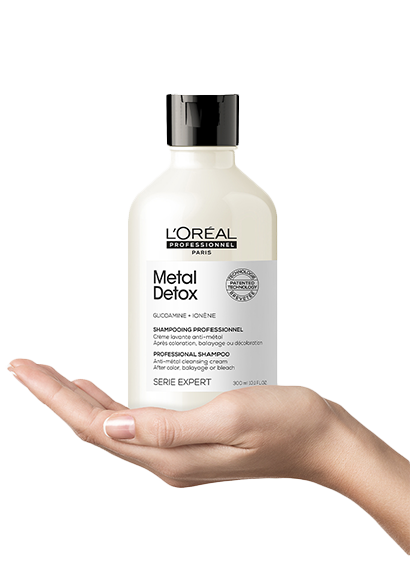

SZAMPON
Metal
Detox
Dla włosów farbowanych
lub zniszczonych
Metal detox
Innowacyjna technologia z Glikoaminą oczyszcza włosy z metali, chroni je przed ponownym osadzaniem się oraz sprawia, że są odżywione, miękkie i pełne blasku.

dłuższa trwałość koloru*
bardziej błyszczące włosy*
